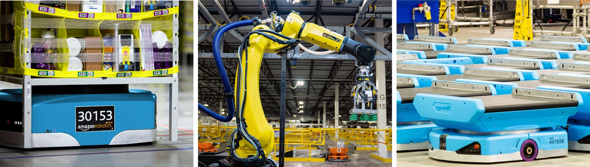

Amazon Robotics
Robotics Data Scientist Intern · Seattle, WA · Sep–Dec 2025

Overview
Internship focused on production robotic vision systems at scale: diagnosing failures with statistical rigor, turning fuzzy quality questions into measurable metrics, and reporting to cross-functional partners.
Production diagnosis
- Diagnosed a month-long unresolved production failure in a high-volume robotic vision system.
- Applied chi-square and independence tests across millions of cycles; confirmed root cause in under two weeks (>50% faster than the prior trajectory), directly unblocking the engineering fix.
Metrics & monitoring
- Designed cross-model consistency metrics for segmentation, depth, and object dimension pipelines.
- Converted ambiguous stakeholder quality concerns into a measurable production monitoring framework used for threshold tuning and alerting.
Communication & impact
- Communicated test plans, findings, and coverage metrics to cross-functional audiences spanning data scientists, robotics engineers, and product leads.
- Translated technical results into actionable recommendations for engineering and product decisions.